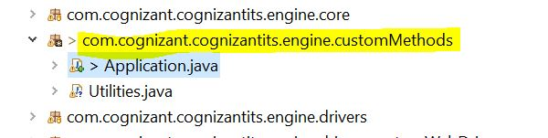

Engine
The Engine is the heart of the tool. This is where the methods corresponding to all the available actions are defined and this folder (location of your tool\Engine) can be imported into any IDE that supports Java. This gives users the flexibility to alter the code of the existing actions or add additional custom actions.
After making modifications to the engine, the users can compile the engine and export it as a JAR file to be used from the UI of the tool.
Note: Java 11 is mapped to Eclipse IDE's workspace settings in order to enable a seamless import of engine and custom method project. Make sure the Eclipse Java compiler is also set to 11
How to open the Engine in Eclipse?
-
Open Eclipse IDE
-
Import project using
File>Import>General>Existing Projects into Workspace -
Locate the Engine project in your system by clicking on [Browse]. This location is usually inside the directory where the tool is present
-
After performing the above steps, you can see the entire project structure
If you see Build Path errors after importing the engine, then you can fix this by removing all the libraries and readding them.
Step 1 : Remove All the libraries - Right Click on the Project Name - Select Build Path > Configure Build Path - Under the Libraries Tab, select all jar files under Classpath - Click on [Remove] Button
Step 2 : Re-Add All the libraries
- Select Classpath from the same location as above
- Click on [Add External JARs] Button
- Navigate to the location where the tool is installed
- Select and add, all libraries under the lib folder
- Click [Apply and Close] Button
Where to write your custom method(s)?
Create a custom package in the Engine under src and place all your .java files containing the custom methods in it. This is the best practice to add your custom method.

How to use your custom method(s) in the UI of the tool?
You can create your custom method in the Engine (as explained in the above section) and export the Engine as a Jar file for the changes to be visible in the UI of the tool.
Follow the steps below to export and replace the engine.jar in the lib folder under the installation location.
-
Select the src/main/java and src/main/resources folder of Engine project
-
Right Click and choose Export option
-
Select
Java>jaroption and click [Next] -
Click on [Browse] and select the path as <installation location>\lib\cognizant-intelligent-test-scripter-engine.jar
-
Click on [Finish] > [OK] to complete the overwriting of the engine.jar
-
Restart the tool to load the updated jar with new methods
How to test your custom method(s) by running/debugging a test case from Engine?
It is a best practice to run or debug your flow from the Engine, before exporting the jar. In case of any errors or exceptions, you can redesign your flow and finally export the jar once the errors have been fixed.
Follow the steps below to execute test case from the Engine.
-
Open Eclipse IDE
-
If you have your custom method in a separate
package, then follow the steps below to add your package name to the package.properties file available in the Configuration folder inside the installation location of the tool
For example, if your custom method is added like this :

Navigate to the location where the tool is installed >> Go to Configuration folder >> Inside package.properties add the package name like this :

- In the same
Configurationfolder >> Open theGlobal Settings.propertiesfile and provide the details as shown in the image below:
- For executing the test case with your custom method:
Add the custom method name in the test case as shown below. It will show in Red in the UI of the tool, but thats expected as you have not yet built a JAR file. You are only testing the custom method.

Run the control.java file from the com.cognizant.cognizantits.engine.core package.

- You can also keep break points wherever required and debug the test case after triggering the execution form the control.java file.